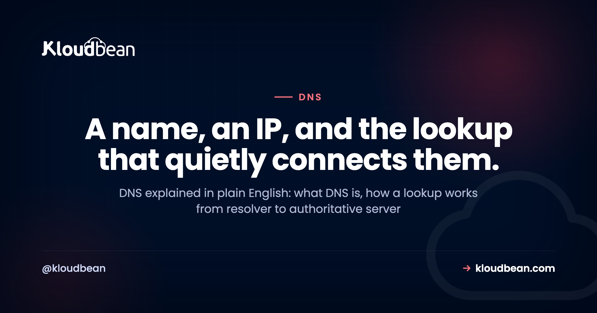
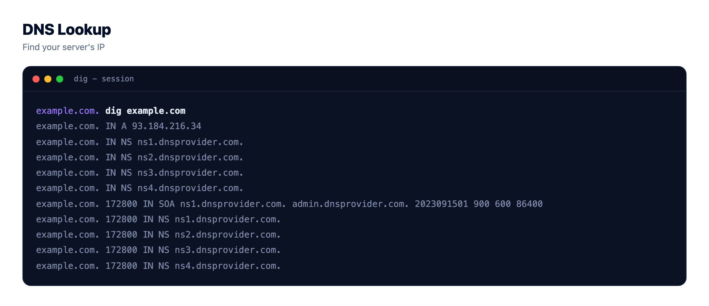
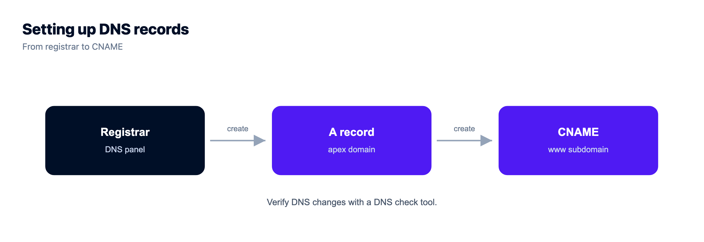
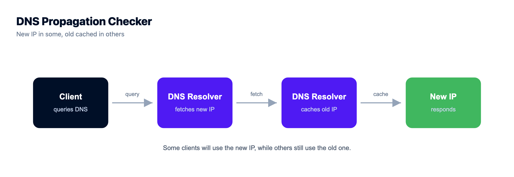
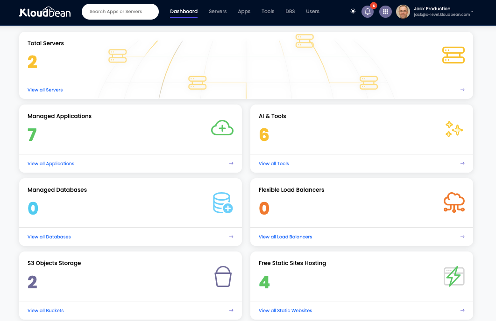

DNS Explained: How the Internet Finds Your Server

You changed hosts, updated one setting, and now the site won't load. Or you pointed a fresh domain at your server and nothing happens. Nine times out of ten the server is fine and DNS is the thing standing in the way.
So here's DNS explained the way you'd actually want it: what DNS is, how a single lookup really works, the records you'll ever touch, and why a change you made an hour ago still hasn't shown up everywhere. Just a name, a number, and the lookup that connects them.
DNS, the Domain Name System, is the internet's phone book. It turns a name like example.com into the IP address of the server behind it. When you load a site, a resolver walks from the root servers down to the domain's authoritative server, fetches that IP, caches it briefly, and your browser connects.
DNS explained: what it actually is
Start with the problem DNS solves. Your browser doesn't speak names. It speaks IP addresses, the numeric labels every server answers to, like 203.0.113.10 for IPv4 or a longer hex string for IPv6. You, though, are not going to memorize numbers. You want to type a name and hit enter.
DNS is the translation layer in between, and the phone book analogy stuck for good reason: look up a name, get back a number, place the call. Underneath, it's a massive distributed database spread across millions of servers, with no single machine holding it all. That's deliberate. One directory holding every domain on earth would be a bottleneck and a spectacular single point of failure, so the job splits into a hierarchy that any resolver can walk. It's the first hop in how cloud hosting works, before a line of your code runs.
How does DNS work? One lookup, step by step
So how does DNS work when you load a page? Follow one lookup all the way through.
Your browser hands the name to a recursive resolver, usually your ISP's or a public one like 1.1.1.1 or 8.8.8.8. Its job is to return a single IP, whatever it takes. The bit most walkthroughs skip: the resolver doesn't know where example.com lives either. It asks a chain of servers, each of which knows only the next step down.
It starts at the top. The 13 root server addresses (anycast, so far more machines behind them) don't know your IP. They know who runs .com, and point the resolver at the TLD servers for .com. Those don't know your IP either, but they know which nameservers are authoritative for example.com. The resolver asks that authoritative nameserver, the one holding your records, and gets the A record with the IP. It caches the answer, hands it back, and the connection opens.
That whole walk takes a few milliseconds, and often it doesn't happen at all, because the answer is already cached somewhere along the line. Want to watch it live?
# ask a resolver and see the answer plus the seconds left on its cache
dig example.com A +noall +answer
example.com. 283 IN A 203.0.113.10
# trace the whole chain from the root down yourself
dig example.com +trace
The DNS records you'll actually touch
A domain's records live together in a zone. You'll hear about a dozen types and touch maybe six. Here's a small but real zone, trimmed to the ones that matter:
; a small but real zone file
example.com. 3600 IN A 203.0.113.10
example.com. 3600 IN AAAA 2001:db8::10
www.example.com. 3600 IN CNAME example.com.
example.com. 3600 IN MX 10 mail.example.com.
example.com. 3600 IN TXT "v=spf1 include:_spf.example.net ~all"
example.com. 86400 IN NS ns1.registrar.net.Read top to bottom, that's most of the DNS you'll ever manage. What each one does:
| Record | Maps a name to | You reach for it to |
|---|---|---|
| A | an IPv4 address | send the domain to your server's IP |
| AAAA | an IPv6 address | do the same over IPv6 |
| CNAME | another name | make www follow the apex |
| MX | a mail server (with a priority) | route email for the domain |
| TXT | free-form text | verify ownership, SPF, DKIM, DMARC |
| NS | the domain's nameservers | declare who is authoritative |
Two of these cause most of the confusion, so be precise about the A record and CNAME difference. The A record matters most for a website: it points a name straight at an IPv4 address, your server's public IP. AAAA is the same idea for IPv6. A CNAME is different. It points a name at another name, not an IP, which is why www is usually a CNAME onto the apex. Change the server's IP later and you update one A record; www follows on its own. That works because the address is expected to stay put, which is the practical difference between a static and a dynamic IP address: an address that changes on its own leaves your A record pointing at nothing you own.
Now the classic trap: you can't put a CNAME on the apex (the bare example.com) in standard DNS, because the apex needs records like NS and often MX, and a CNAME can't sit beside them. So the apex gets an A record and only www gets a CNAME. Some providers offer an ALIAS or ANAME record (or CNAME flattening) to fake an apex CNAME, which is handy when you have it. The plain rule holds: apex is an A record, www is a CNAME.

TTL and why DNS propagation takes time
Every record carries a TTL, its time to live, in seconds. That 3600 above means one hour. TTL is a promise to resolvers: cache this answer for this long, then check again. A low TTL means changes take effect fast but resolvers ask more often. A high TTL means fewer lookups but slower changes. That trade-off is the whole story behind DNS propagation.
One thing to unlearn: nothing actually propagates. Change a record and no signal gets pushed out to the world's resolvers. What happens is quieter. Resolvers that cached the old answer keep serving it until the TTL runs out, then fetch the new one. So DNS propagation is just old cached copies expiring on their own schedule, resolver by resolver, worldwide. That's why a change looks instant to you and stays stale for someone whose resolver cached the old IP an hour ago.
There's a practical move here. Migrating servers? Lower the TTL a day ahead, to 300 seconds or even 60. Once the old high TTL has aged out everywhere, every resolver holds the record for only a minute, so flipping to the new IP is nearly quick. Raise it back after. Skip this and a TTL of 86400 means some visitors keep hitting your old server for a full day after you moved.

Where DNS goes wrong (the classic gotchas)
Most DNS problems aren't exotic. They're the same handful of mistakes, over and over.
- The A record points at the wrong IP. You typed the old server's address, or a typo, or the load balancer's IP when you meant the server's. The domain resolves fine, just to the wrong place. Confirm the A record matches the IP you actually meant.
- You forgot the www CNAME (or the apex A). The bare domain works and
wwwerrors out, or the reverse. Add the missing record so both resolve, then redirect one to the other. - The TTL was too high before a migration. You moved hosts, updated the record, and half your traffic still lands on the dead server hours later. Nothing's broken. The old TTL is just aging out. This is the one that panics people needlessly.
- A stale CAA record blocks your SSL. A CAA record restricts which certificate authorities may issue for your domain, and an old one can silently stop a new certificate from being issued even when DNS resolves perfectly. More on that failure in fixing SSL certificate errors.
- The domain still points at your old DNS provider. If you changed nameservers at the registrar, you're now editing records in a panel that isn't authoritative yet. Those edits do nothing until the NS delegation catches up.
From a DNS record to your live server and SSL
All this theory lands on one act: pointing a domain at a server you control. The shape never changes. Your server has a public IP. You create an A record at your registrar pointing the domain at that IP (plus a www CNAME onto the apex). DNS resolves. Done.

One point trips people up, so plainly: your DNS records live at your registrar, not inside your host. On Kloudbean you tell the server which domains to answer for, and the platform issues the certificate, but the A and CNAME records are managed wherever you registered the domain. Host and registrar are different jobs. The step-by-step version, with the www-versus-apex call and the exact records, is in how to add a custom domain and free SSL.
Once the name resolves to your server, SSL falls into place. Kloudbean issues free, auto-renewing certificates on your Linux server, and the order matters for a pure-DNS reason: a certificate authority proves you control the domain by checking that it points where it should. No resolution, no certificate. So when an SSL request fails moments after you set up DNS, the honest first answer is usually that DNS hasn't finished resolving yet, not that the certificate is broken.

And the IP your record points at isn't abstract. It's a real server in a region you picked, which is where data residency quietly enters the DNS story. Run more than one server and the A record can point at a load balancer's address instead, one public IP in front of a pool. DNS gets your visitor to the front door. What sits behind it is your architecture.
DNS is one layer of the stack
A zone file is small, with outsized power, and still just the first hop. Behind that IP sit the server, the app, the database, SSL, and backups. On Kloudbean they share one login, so the domain, the server it resolves to, and its certificate all sit on one screen.

One dashboard for the whole stack.
Servers, managed databases, object storage, and a built-in load balancer live behind one login, on the cloud and region you pick. The stack, SSL, patching, and backups are handled for you.
- ✓ Seven cloud providers
- ✓ Managed databases
- ✓ Object storage
- ✓ Automatic backups
- ✓ Free SSL
- ✓ Git deploy
- ✓ Free migration assistance
FAQ
What is DNS in simple terms?
DNS, the Domain Name System, is the internet's phone book. Browsers connect to numeric IP addresses, but people prefer names, so DNS translates a name like example.com into the IP of the server that answers for it. It's distributed across many servers, so no single machine holds every domain.
How does DNS work step by step?
Your browser asks a recursive resolver. The resolver asks a root server, which points it to the top-level-domain servers such as .com. Those point it to the domain's authoritative nameserver, which returns the IP in an A record. The resolver caches that and hands the IP to your browser, which connects.
What is the difference between an A record and a CNAME?
An A record maps a name directly to an IPv4 address, so it points your domain at a server's IP. A CNAME maps a name to another name rather than an IP, which is why www is usually a CNAME onto the apex. You can't use a CNAME on the bare apex in standard DNS, so the apex uses an A record.
What is DNS propagation and why does it take so long?
Propagation is the delay before a record change is visible everywhere. Nothing is pushed out. Resolvers that cached the old answer keep serving it until the TTL expires, then fetch the new value. Because caches expire on their own clocks worldwide, a change can be instant for you and stale for others for minutes to hours.
What is TTL in DNS?
TTL, or time to live, is how many seconds a resolver may cache a record before checking again. A low TTL makes changes take effect quickly but adds lookups. A high TTL means fewer lookups but slower changes. Lowering TTL a day before a planned migration makes the switch much faster.
Why does my site still show the old server after I changed DNS?
Almost always caching. Resolvers between you and the site cached the old IP and keep using it until the record's TTL runs out, which can be hours if the TTL was high. Confirm the record now points at the correct IP, then wait for the cached copies to expire.
Can I point my domain at a Kloudbean server?
Yes. Your server has a public IP, so you create an A record at your registrar pointing your domain at it, plus a CNAME for www. You tell the Kloudbean console which domains the server should answer for, and once DNS resolves it issues a free auto-renewing SSL certificate. The records stay at your registrar.
Why won't my SSL certificate issue right after I set up DNS?
Usually because DNS hasn't finished resolving. A certificate authority confirms you control the domain by checking that it points to your server, and that check fails until the name resolves. Verify it resolves to your IP first. If it does and issuance still fails, look for a CAA record blocking the authority.